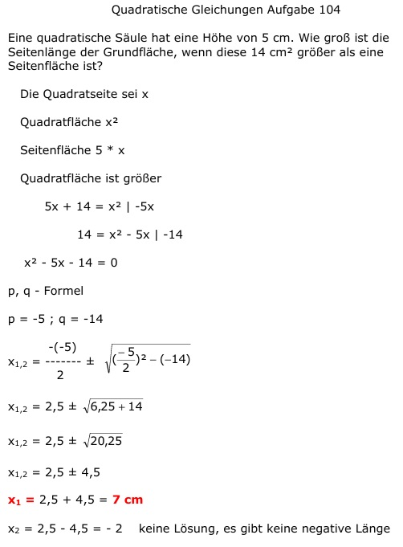

Aufgabe 104 Eine quadratische Säule hat eine Höhe von 5 cm. Wie groß ist die Seitenlänge der Grundfläche, wenn diese 14 cm2 größer als eine Seitenfläche ist? Die Quadratseite sei x Quadratfläche x2 Seitenfläche 5 * x Quadratfläche ist größer 5x + 14 = x2 | -5x 14 = x2 - 5x | -14 x2 - 5x - 14 = 0 p, q - Formel p = -5 ; q = -14  x1,2 = 2,5 ± 4,5 x1 = 2,5 + 4,5 = 7 cm x2 = 2,5 - 4,5 = -2 keine Lösung, es gibt keine negative Länge